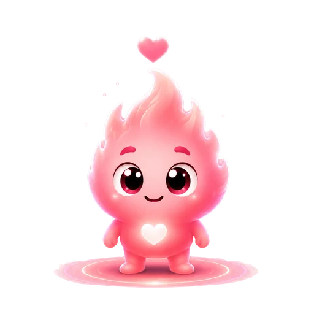

10 · Ele — quando ela prefere privado

O ciclo da Ana é só dela
Ela preferiu não partilhar. E está tudo bem. Se quiseres saber como ela está, pergunta-lhe com carinho.
Ir para o Chat
Só tu vês os detalhes.
Prevista para sexta, 6 nov · aprendida com 5 ciclos
Sugeridos para esta fase · guarda sozinho
A partir de sábado é comum sentir mais cansaço e sensibilidade.
Só tu vês os detalhes.
Costuma durar 5 dias · cuida de ti
Só tu vês os detalhes.

Hoje é o dia previsto. Se já veio, eu marco por ti e ajusto as próximas previsões.
Ainda não · pergunta amanhã
Corpo
Emoções
Também
Duas perguntas e eu trato das contas. Vou aprendendo contigo a cada mês.
Rosa: período · lilás: dias de TPM
Os teus sintomas, notas e intimidade nunca são partilhados. Escolhe o resto.
A Ana partilha isto contigo.
Ela preferiu não partilhar. E está tudo bem. Se quiseres saber como ela está, pergunta-lhe com carinho.